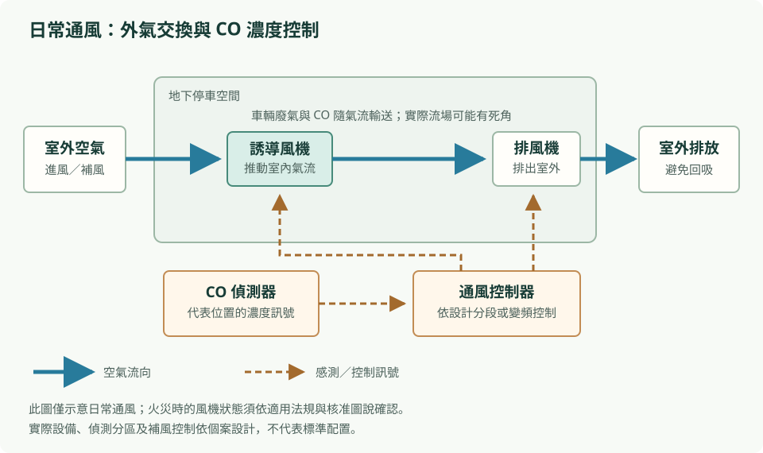

前言
地下停車場車輛進出、發動及怠速時，排氣可能在局部累積；其中一氧化碳（carbon monoxide，CO）無色無味，人無法可靠地憑感官察覺。即使總排風量足夠，梁柱、車輛與牆面也可能造成氣流不均，使局部濃度高於空間平均值。[1]
誘導式通風利用停車場內的風機推動氣流，再由進風與排風系統完成室內外換氣；感測器與變頻控制則可讓日常運轉隨需求調整。但火災時煙氣流動、避難和排煙設備的法規要求與日常污染物稀釋不同，不能直接沿用平時控制邏輯。[2][3]
本文以大型封閉式地下汽車停車空間為主要情境，說明氣流與 CO 的基本原理、控制和教學試算，並討論台灣火災排煙的介面。本文不是設計圖說、消防審查或現場操作指令；實際系統須由相關專業人員依使用條件、適用法令與核准文件設計驗證。
一、系統架構：誘導風機不是排風出口
誘導風機（jet fan）在空間內形成具有動量的射流，帶動周圍空氣朝預定方向移動。它本身通常不把空氣排到室外；真正帶走污染物的是連通室外的排風路徑，而補充空氣必須有可用的進風路徑。風機原理與流量、壓力之間的關係可參考 ASHRAE 風機章節。[2]

| 元件 | 作用 | 主要限制 |
|---|---|---|
| 進風口或補風設備 | 提供外氣與氣流入口 | 須考慮入口位置、阻力與排氣回吸。 |
| 誘導風機 | 推動局部氣流，減少死角 | 受梁柱、車輛、噪音和配置方向影響；不等於外氣量。 |
| 排風機與排出口 | 將空氣與污染物排至室外 | 有效排風量由風機與系統阻力共同決定。 |
| CO 偵測器及控制器 | 量測代表位置，調節日常通風 | 盲區、漂移及通訊故障都會影響判斷。 |
| 火警與排煙系統 | 依核准策略處理火災訊號與排煙 | 與日常通風的目的及法規不相同。 |
可將日常氣流想成「室外 → 進風路徑 → 停車空間（由誘導風機協助輸送）→ 排風口 → 室外」。進風短路至排風口時，即使總流量不小，也可能未有效掃過遠端停車區。這是依質量守恆與氣流路徑作出的工程推論，不能只以風機台數判斷。
二、污染物與氣流的基本原理
1. 混合、稀釋與局部高濃度
CO 由燃料燃燒不完全產生，可能引起頭痛、暈眩、意識喪失，嚴重時致命；車輛廢氣是來源之一。[1] 日常排風的目的，是用較低污染濃度的外氣稀釋並帶走污染物。車輛位置和排放量會隨時間變化，因此單一感測點或全場平均值不代表每個位置都安全。
以體積濃度表示，氣體的 ppm 為每百萬份空氣中所占體積份數。若把一個區域簡化為等容積、完全混合的單區，且進出風量相等、沒有其他移除途徑，守恆式可寫為：
V × dC/dt = G + Q × Cin − Q × C
其中 V 是區域容積（m³），C 與 Cin 分別為室內與進風 CO 體積分率（無因次），t 為時間（h），G 為 CO 體積產生率（m³/h），Q 為有效外氣交換量（m³/h）。這是依污染物質量守恆推導的教學模型；ASHRAE 討論通風、混合及污染物濃度的估算方法。[4] 換算時 1 ppm = 10−6 體積分率。
若 G、Q 與 Cin 不變且達穩態，則 C = Cin + G/Q。此式不包含污染源附近的濃度峰值、空氣短路、感測延遲與瞬時車流，不能直接用來保證真實車場每一處的濃度。
2. 射流、阻礙與外氣交換
風機改變空氣速度並傳遞動量。[2] 誘導射流捲吸周圍空氣，可改善氣流輸送，但射流會因距離與障礙物而改變；迴流或局部停滯可能仍然存在。增加誘導風機的循環流量，不等於增加從室外引入的新鮮空氣量。
三、CO 感測與變頻控制如何配合？
控制應從適用要求、車流型態和通風分區出發，而非先挑一個通用 ppm 設定值。各偵測器的位置應能代表可能的污染區域，同時避免只裝在進風口等容易低估濃度的位置；選址、數量與安裝高度須依設備文件、場地氣流及適用規範確認。
| 設計要點 | 工程判斷 |
|---|---|
| 量測與分區 | 檢討坡道、車道、角落及人員停留區；多點讀值需保留異常資訊，避免單純平均掩蓋局部峰值。 |
| 調節方式 | 可依核准策略分段啟停或調速；排風、補風與誘導風機要協調，避免只有內部循環而缺少有效換氣。 |
| 穩定控制 | 可採用啟停差、時間延遲及最短運轉時間抑制頻繁切換；延遲不能妨礙安全警報或使濃度持續升高。 |
| 故障處置 | 感測器失效、斷線、超量程及風機故障要能辨識、警報並依核准方案進入安全狀態；不可將失效讀值視為乾淨空氣。 |
| 量測維護 | 定期檢測、校正與更換依原廠文件及現場維護計畫執行；留下日期、結果和修復紀錄。 |
CO 是重要指標，但不代表所有車輛污染物：車種及運轉條件不同，其他氣體或微粒的排放也不同。僅憑 CO 一項，不足以證明其他污染物均符合要求。法定限值、控制門檻、暴露平均時間和警報值的用途也不同，必須分開核對，不能相互替代。
對幾何尺寸不變、空氣密度近似固定且工作點相似的同一風機，理想相似律表示流量約與轉速成正比、壓力約與轉速平方成正比、軸功率約與轉速立方成正比。[2] 例如轉速降至 80% 時，理想軸功率比約為 0.8³ = 0.512；這不是整座車場節電率，也不代表電網輸入功率一定相同。風機曲線、固定壓力、效率、變頻器損失及最低換氣要求都會改變實際結果。
四、教學案例：用守恆式估算平均 CO 濃度
以下為說明原理所建立的假設案例，並非實際設備的測試結果，也不是停車場設計值或法規限值。 目的在比較外氣量變化對理想平均濃度的影響。
假設區域容積 V = 30,000 m³，外氣 CO 濃度 Cin = 2 ppm，穩定 CO 產生率 G = 0.30 m³/h；進排風量相等、混合完全、氣體體積基準一致，且已達穩態。
| 假設有效外氣量 Q | 平均濃度計算 | 平均換氣次數 Q/V |
|---|---|---|
| 15,000 m³/h | 2 + (0.30 / 15,000) × 106 = 22 ppm | 0.5 h−1 |
| 30,000 m³/h | 2 + (0.30 / 30,000) × 106 = 12 ppm | 1.0 h−1 |
當 Q 加倍，因車輛污染源造成的濃度增量由 20 降至 10 ppm；加上固定的外氣背景後，總濃度由 22 降至 12 ppm，不是恰好減半。以後者驗算：排出 CO 為 30,000 × 12 × 10−6 = 0.36 m³/h；等於產生 0.30 加外氣帶入 0.06 m³/h，符合穩態守恆。
若初始濃度為 2 ppm，Q = 30,000 m³/h 的理想時間常數 V/Q 為 1 小時；從質量守恆式解出 C(t) = 2 + 10(1 − e−t) ppm，t 以小時計，1 小時約 8.3 ppm。此為固定源強與理想混合的動態示意；真實車流會變、局部濃度可能更高，不能用於設定現場警報或安全等待時間。
五、緊急排煙與日常通風的整合邊界
火災產生的熱浮力、煙層、煙氣流動及避難條件，不等同日常汽車廢氣稀釋。不同排煙策略有不同目標；氣流可能改變煙的移動與煙層狀態，因此不能假定平時誘導風機全部啟動、全部停止或反轉都適用於所有火場。火源位置、偵測、灑水、補風、排煙、避難及消防人員操作都要一起評估。[3]
設計交接至少應明確記載：火警訊號來源與優先順序、哪些設備依核准方案啟停、排煙口與風機狀態回報、電源與線路、手動操作和故障警報，以及復歸程序。第 188 條亦列有適用排煙設備的排煙口、防煙區劃、排煙量與緊急電源等條件；必須先判斷條文適用範圍，不得將其中數值當作所有地下車場一律適用的設計公式。[5][6]
若個案擬採用不同於一般法規設置方式的方案，應先向主管機關確認可行的法定程序與審查文件，未獲核准前不得自行變更消防連動。火災或疑似 CO 異常時，以場地既定應變計畫及消防指揮為準，不因本文的教學範例延遲通報與撤離。
六、設計驗證、維護與常見誤區
從圖面到現場
先確認停車分區、車輛動線、進排風位置、梁柱及淨高，再檢討各工況下的氣流路徑。數值流體力學（computational fluid dynamics，CFD）可協助比較流場與煙氣方案，但結果依賴網格、邊界條件、火源、風機模型與驗證資料；它不是自動證明安全的工具。NIST 的 Fire Dynamics Simulator 用於模擬低速流動及火災煙熱傳輸，適用性仍須由專業人員判斷。[3]
測試和交付應涵蓋設計風量與電力、風向、感測器訊號、警報、失效及火警連動，並以核准文件為判定基準。實際車輛、封閉門及障礙物狀態可能與設計模型不同；必要時進行現場量測與調整，並確認變更仍符合核准設計。
維護與排查
- 日常依場地計畫檢視警報、控制器及設備狀態；異常時記錄區域和時間，依程序通報處理。
- 依設備原廠、消防檢修及適用規範安排感測器校驗、風機檢查及連動測試；頻率不宜由本文任意代訂。
- 濃度偏高時，同時檢查車流、外氣背景、感測器、進排風通道、風機狀態與氣流死角，不只提高一台誘導風機轉速。
- 變更隔間、停車配置或設備後，重新檢討氣流及消防設計；測試消防系統前應遵守現場許可與安全程序。
結語與重點整理
地下車場通風的核心不是讓空氣轉動，而是讓外氣經過需要稀釋的空間，並把污染物有效排出。CO 偵測與變頻控制可依需求調整運轉，但結果取決於感測代表性、實際流場及故障處置。
火災排煙是不同的生命安全設計問題；日常節能策略必須服從適用法令與核准的消防連動。可靠的整合需要設計、審查、測試和維護共同完成。
- 誘導風機的循環量不等於室外換氣量。
- 平均濃度模型不能排除局部高濃度。
- 風機相似律是理想近似，不等於實測節電率。
- 火災時各風機的狀態須依適用法規與核准圖說決定。
資料限制
本篇未取得個案核准圖說、現場車流、排放係數、感測器規格及消防審查結果，因此不能確定適用的 CO 門檻、最小風量、風機配置或火災時運轉順序。台灣法規可能修訂，且適用取決於場所及條件；應於設計和使用時查閱現行完整法規並洽主管機關。本文未確認任何特定替代設計或產品的認可狀態。
參考文獻
- Centers for Disease Control and Prevention, About Carbon Monoxide Poisoning，公開網頁。說明 CO 來源、無色無味及健康影響。CDC 原文。
- ASHRAE, 2020 ASHRAE Handbook—HVAC Systems and Equipment, Chapter 21, “Fans”。已查閱公開網頁章節；供風機原理與相似律參考，非本場地設備性能保證。ASHRAE 章節。
- National Institute of Standards and Technology, Fire Dynamics Simulator and Smokeview，公開專案頁。說明 FDS 的煙熱輸送模擬用途。NIST 專案頁。
- ASHRAE, 2021 ASHRAE Handbook—Fundamentals, Chapter 16, “Ventilation and Infiltration”。已查閱公開網頁章節；供通風與污染物濃度分析背景。本文算式為依守恆原理整理的簡化單區模型。ASHRAE 章節。
- 法務部全國法規資料庫，《各類場所消防安全設備設置標準》第 188 條；查閱日期 2026 年 11 月 24 日。說明條文適用範圍及排煙設備連動。第 188 條。
- 法務部全國法規資料庫，《各類場所消防安全設備設置標準》第 28 條；查閱日期 2026 年 11 月 24 日。供判斷排煙設備設置場所的條文範圍。第 28 條。